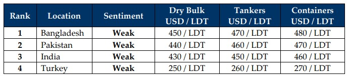

inWeekly Demolition Reports19/05/2025

As the fragile India – Pakistan ceasefire continues to barely hold at the seams with sporadic instances of violence reportedly erupting along theLine of Control (LoC), PM Modi reassures the nation that Operation Sindoor is still very much in play as Indian Forces continue to target terrorists within Pakistan Occupied Kashmir, killing the mastermind behind reporter Daniel Pearl’s tragic execution about 24 years ago, Israel simultaneously ramps up its attacks against Hamas as plans to re-occupy Gaza make the rounds again, and finally Ukraine and Russia continue to hammer each other amidst a growing controversy of arms and military aircraft exports to Ukraine from the EU, further raising the specter of a wider conflict between the nations, the world seems to have suddenly picked up speed for all of the wrong reasons over the last few weeks.
All while President Trump visits the Middle East and accepts planes as gifts while complaining to senior staff about Congressional restrictions blocking such favors, world economies are meanwhile having a hell of a rollercoaster ride with freight markets surging 6% by close of Friday and were essentially propelled by higher rates across all trading segments. The 90-day tariff truce between China and the U.S. also saw crude futures climb 1.4% and end the week at USD 62.5/barrel, as global trade starts to stabilize to global post-tariff conundrums despite lingering uncertainties around the Iran Nuclear deal, which, if successful, could see an additional 200,000 barrels of oil enter the market, placing further uncertainty on oil markets and trade planning.
Shifting from global economic chains to the ship recycling markets also saw the U.S. Dollar surge against nearly all ship recycling nation currencies (except China) this week, whilst steel plate prices firm / decline / flatline in a series of confusing signals to ship recyclers and the industry at large. The recent trimming of tonnage at the bidding tables also seems to be easing as local port positions in both India and Bangladesh reported a healthy collection of arrivals and deliveries this week. In Bangladesh, the recent backlog of vessels idling outside, awaiting their respective NOCs that built up across April also saw several deliveries ensue this week as exemptions came through from the ministry to recently approved HKC yards, all while a series of units committed to non-certified yards still remain stranded outside port limits.
Pending HKC upgrades aside, markets overall feel like the they have been cornered as diminished pricing and confusing fundamentals have left sentiments uncertain and demand anemic. With HKC hurdles shifting the recent focus of vessels to the more active Indian (or non-HKC Pakistani) markets, unfolding economic constraints stand to pressure prices down even as freight markets start to settle, charter rates start to climb, and the supply of candidates may start to increase through the second half of the year despite a traditionally slower and quieter monsoon season, thanks to trading opportunities for increasingly overaged units finally starting to disappear and these units should start truckling to recycling facilities at their end of their charters, after what has been a few years of buoyant freight markets across the board.
For Week 20 of 2025, GMS Market Rankings / vessel indications are as below.

📄 Download PDF: Ship-recycling-market-insight-Week-20-05-16-2025-Sudden_Speed-1747622773.pdfSource: GMS,Inc.https://www.gmsinc.net/gms_new/index.php/web